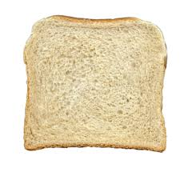

Toast Recipe

Delicious toast and easialy done in under 30 minutos.
WHat about that.
Try it out by fallowing the simple steps bellow:
Ingredients
- bread
- butter
- cheese
- salta and pepper
Steps
- Heat a pan
- Spreed the butter and cheese on the bread
- Cook it both sides for 5 minutos